Geometric Transforms
Same-size flips, rotations and shifts, and mask-driven canonical poses: transforms that put an image into a standard orientation so that situations that are mirror images or rotations of each other look the same to the rest of the program.
| Getter | Bundles |
|---|---|
get_extension_transform_intensityimg() | bundle_image2DIntensity_transform_factory |
get_extension_transform_binaryimg() | bundle_image2DBinary_transform_factory |
get_extension_transform_segmentimg() | bundle_image2DSegment_transform_factory |
All three bundles hold the same twelve operators. Outputs keep the specialised size and pixel type; pixels coming from outside the image are zero. Intensity images are resampled bilinearly, masks and segment maps with nearest neighbour so their values are never blended.
Example frame
80×120, shown at 2×: an "L" marker in the top-left corner (so orientation is easy to read), two paddles and a ball.
Flips and quarter turns
transform_flip_h | transform_flip_v | transform_rotate_180 |
|---|---|---|
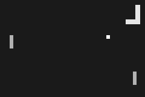 | 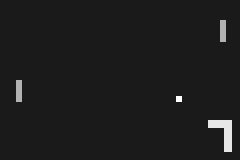 |
transform_rotate_90 (counter-clockwise) | transform_rotate_270 (clockwise) |
|---|---|
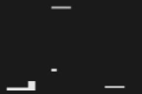 | 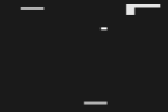 |
Quarter turns are exact on square images. This frame is 80×120, so the rotated 120×80 picture is stretched back to 80×120: the type, and therefore the size, of a MAGE image cannot change.
Rotation by any angle
transform_rotate(img, a) rotates by a turns counter-clockwise about the centre (0.25 = 90°). Corners that come from outside the image are zero.
a = 0.03 (≈ 11°) | a = 0.125 (45°) | a = 0.25 (90°) | a = 0.5 (180°) |
|---|---|---|---|
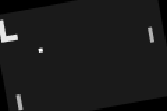 |  |
Shifts
transform_shift(img, dx, dy) moves the image by (u − 0.5) of its size per axis: 0.5 is no shift, 0 half the image left (up), 1 half right (down). (img, s) uses dx = dy = s. transform_shift_wrap wraps around instead of filling with zero, like playfields where leaving one side re-enters the other.
| Call | transform_shift | transform_shift_wrap |
|---|---|---|
(img, 0.6, 0.5): 12 px right | 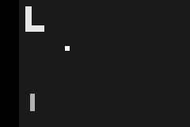 | 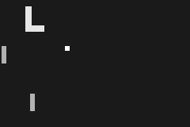 |
(img, 0.5, 0.7): 16 px down | ||
(img, 0.3): up-left | 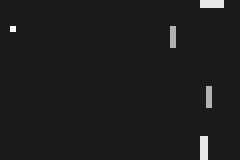 | |
(img, 0.9, 0.3) | 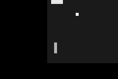 | 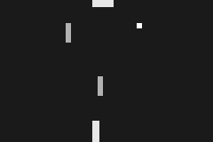 |
Canonical poses from a mask
These operators look at a mask (a binary mask, an intensity map thresholded at 0.5, or with (img) the image itself) and transform the image accordingly.
Mirror so the object is always on the same side
transform_flip_h_if_right(img, mask) mirrors the image left-right when the mask's centroid is in the right half; transform_flip_v_if_bottom does the same vertically. Here the mask is the ball (frame > 0.95): the two rallies are mirror images, and after the operator they are the same picture, so one evolved rule covers both sides of the court.
| Ball on the left | Ball on the right | |
|---|---|---|
| input | 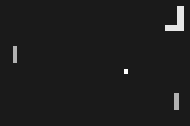 | |
transform_flip_h_if_right(img, ball) |  |  |
transform_flip_v_if_bottom(img, mask) does the same vertically: the image is mirrored top-bottom when the mask's centroid is in the bottom half, so the ball always ends up in the top half.
| Ball in the top half | Ball in the bottom half | |
|---|---|---|
| input | 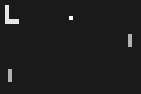 | 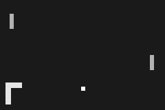 |
transform_flip_v_if_bottom(img, ball) |  |  |
With (img) alone, the image is its own mask (intensity ≥ 0.5): the decision then depends on where all the bright pixels are, not only the ball.
Align the main axis
transform_align_axis(img, mask) rotates about the image centre so the mask's principal axis is horizontal. transform_canonical_pose(img, mask) also moves the mask's centroid to the centre: position and orientation are removed, only shape remains.
| Input | transform_align_axis(img, mask) | transform_canonical_pose(img, mask) |
|---|---|---|
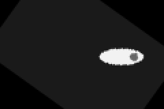 | 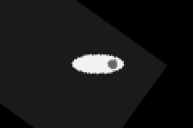 |
The principal axis has no head or tail, so an object can end up pointing left or right; follow with transform_flip_h_if_right on a mask of a distinguishing part to fix that too.
Binary and segment images
The binary and segment bundles hold the same operators with nearest-neighbour sampling:
| Mask | transform_rotate(mask, 0.06) | Segment map | transform_rotate(labels, 0.06) |
|---|---|---|---|
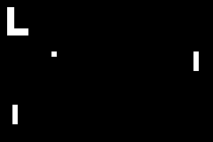 | 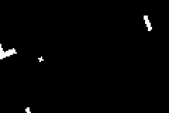 | 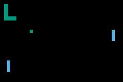 | 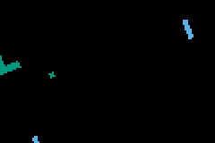 |
Bundles
UTCGP.image2D_transform — Module
Geometric transforms that keep the image size: flips, rotations, shifts, and mask-driven canonical poses.
Bundles
- bundleimage2DIntensitytransform_factory
- bundleimage2DBinarytransform_factory
- bundleimage2DSegmenttransform_factory
The exhaustive operator list is on the Bundle Catalogue page.
How this file is organised
Each operator is a kernel on pixel matrices ((destination, source, ...) -> destination) wrapped by a factory. A factory is a function of the output image type I; it defines the operator's methods for I and returns the function. There are four method shapes (see each _*_factory): image only, image and one scalar, image and a point, image and a mask.
Arbitrary transforms go through _warp!, which maps each output pixel back to a source position (inverse mapping, so every output pixel gets exactly one value), then samples there: bilinearly for intensity images, nearest neighbour otherwise.
Example
using UTCGP, ImageCore
img = SImageND(IntensityPixel{N0f8}.(rand(32, 32)))
I = typeof(img)
flip = bundle_image2DIntensity_transform_factory[:transform_flip_h].fn(I)
flip(img) # column j of the result is column 33 − j of img
shift = bundle_image2DIntensity_transform_factory[:transform_shift].fn(I)
shift(img, 0.75, 0.5) # moved round(0.25 · 32) = 8 columns right, not vertically
rotate = bundle_image2DIntensity_transform_factory[:transform_rotate].fn(I)
rotate(img, 0.25) # a quarter turn counter-clockwise about the centreUTCGP.image2D_transform.bundle_image2DIntensity_transform_factory — Constant
bundle_image2DIntensity_transform_factorySame-size geometric transforms of intensity images (bilinear resampling).
All operators keep the specialised size and pixel type. Pixels that come from outside the image are zero. Intensity images are resampled bilinearly; binary masks and segment maps use nearest neighbour, so their values are never blended.
transform_flip_h,transform_flip_v,transform_rotate_180: exact.transform_rotate_90,transform_rotate_270: exact on square images; on rectangular ones the rotated image is stretched back to the original size.transform_rotate(img, a): rotation byaturns (0.25= 90° counter-clockwise on screen) about the centre.transform_shift(img, dx, dy)/(img, s): translation by(u − 0.5)of the image size per axis, so0.5is no shift,0moves half the image left/up and1half right/down.transform_shift_wrapwraps around instead of filling with zero.transform_flip_h_if_right,transform_flip_v_if_bottom: flip so the mask's foreground lies in the left (top) half. Mirrored situations then look the same, e.g. the ball on either side of a Pong court.transform_align_axis: rotate about the centre so the foreground's main axis is horizontal.transform_canonical_posealso moves the foreground's centroid to the centre.
Mask-driven operators accept (img, mask) with a binary mask or an intensity map thresholded at 0.5; (img) uses the image itself (binary, or intensity at 0.5).
UTCGP.image2D_transform.bundle_image2DBinary_transform_factory — Constant
bundle_image2DBinary_transform_factorySame-size geometric transforms of binary masks (nearest neighbour).
All operators keep the specialised size and pixel type. Pixels that come from outside the image are zero. Intensity images are resampled bilinearly; binary masks and segment maps use nearest neighbour, so their values are never blended.
transform_flip_h,transform_flip_v,transform_rotate_180: exact.transform_rotate_90,transform_rotate_270: exact on square images; on rectangular ones the rotated image is stretched back to the original size.transform_rotate(img, a): rotation byaturns (0.25= 90° counter-clockwise on screen) about the centre.transform_shift(img, dx, dy)/(img, s): translation by(u − 0.5)of the image size per axis, so0.5is no shift,0moves half the image left/up and1half right/down.transform_shift_wrapwraps around instead of filling with zero.transform_flip_h_if_right,transform_flip_v_if_bottom: flip so the mask's foreground lies in the left (top) half. Mirrored situations then look the same, e.g. the ball on either side of a Pong court.transform_align_axis: rotate about the centre so the foreground's main axis is horizontal.transform_canonical_posealso moves the foreground's centroid to the centre.
Mask-driven operators accept (img, mask) with a binary mask or an intensity map thresholded at 0.5; (img) uses the image itself (binary, or intensity at 0.5).
UTCGP.image2D_transform.bundle_image2DSegment_transform_factory — Constant
bundle_image2DSegment_transform_factorySame-size geometric transforms of segment maps (nearest neighbour).
All operators keep the specialised size and pixel type. Pixels that come from outside the image are zero. Intensity images are resampled bilinearly; binary masks and segment maps use nearest neighbour, so their values are never blended.
transform_flip_h,transform_flip_v,transform_rotate_180: exact.transform_rotate_90,transform_rotate_270: exact on square images; on rectangular ones the rotated image is stretched back to the original size.transform_rotate(img, a): rotation byaturns (0.25= 90° counter-clockwise on screen) about the centre.transform_shift(img, dx, dy)/(img, s): translation by(u − 0.5)of the image size per axis, so0.5is no shift,0moves half the image left/up and1half right/down.transform_shift_wrapwraps around instead of filling with zero.transform_flip_h_if_right,transform_flip_v_if_bottom: flip so the mask's foreground lies in the left (top) half. Mirrored situations then look the same, e.g. the ball on either side of a Pong court.transform_align_axis: rotate about the centre so the foreground's main axis is horizontal.transform_canonical_posealso moves the foreground's centroid to the centre.
Mask-driven operators accept (img, mask) with a binary mask or an intensity map thresholded at 0.5; (img) uses the image itself (binary, or intensity at 0.5).
Timings for the examples
Measured during this documentation build. See Timing methodology for measurement limits and input cases that can make operators expensive.
Julia 1.13.2; znver3; 1 Julia thread(s); optimisation level 2.
Times are warmed wall-clock measurements of the actual calls above, including invokelatest and allocations. Loading, factory generation and image rendering are excluded. CPU load and garbage collection affect these values. The maximum is the slowest observed sample, not a worst-case bound.
| Input | Dimensions | Pixel storage |
|---|---|---|
| image #1 | 80×120 | IntensityPixel{FixedPointNumbers.N0f8} |
| image #2 | 80×120 | IntensityPixel{FixedPointNumbers.N0f8} |
| image #3 | 80×120 | BinaryPixel{Bool} |
| image #4 | 80×120 | IntensityPixel{FixedPointNumbers.N0f8} |
| image #5 | 80×120 | BinaryPixel{Bool} |
| image #6 | 80×120 | IntensityPixel{FixedPointNumbers.N0f8} |
| image #7 | 80×120 | BinaryPixel{Bool} |
| image #8 | 80×120 | IntensityPixel{FixedPointNumbers.N0f8} |
| image #9 | 80×120 | BinaryPixel{Bool} |
| image #10 | 80×120 | IntensityPixel{FixedPointNumbers.N0f8} |
| image #11 | 80×120 | BinaryPixel{Bool} |
| image #12 | 80×120 | BinaryPixel{Bool} |
| image #13 | 80×120 | SegmentPixel{Int64} |
Numeric-only plot calls of the same operator and arity are grouped: argument ranges cover the sampled values, the median is the median of the per-case medians, and the maximum covers every observed sample. Image calls keep a row for each input/parameter combination.
| Operator | Inputs | Output | Median (µs) | Observed max (µs) | Allocated bytes (median) | Cases / samples |
|---|---|---|---|---|---|---|
transform_flip_h | image #1 | 80×120, IntensityPixel{FixedPointNumbers.N0f8} | 3.25 | 11.26 | 9704 | 1 / 3 |
transform_flip_v | image #1 | 80×120, IntensityPixel{FixedPointNumbers.N0f8} | 1.65 | 11.0 | 9704 | 1 / 3 |
transform_rotate_180 | image #1 | 80×120, IntensityPixel{FixedPointNumbers.N0f8} | 3.08 | 12.8 | 9704 | 1 / 3 |
transform_rotate_90 | image #1 | 80×120, IntensityPixel{FixedPointNumbers.N0f8} | 83.72 | 92.96 | 9704 | 1 / 3 |
transform_rotate_270 | image #1 | 80×120, IntensityPixel{FixedPointNumbers.N0f8} | 82.96 | 91.02 | 9704 | 1 / 3 |
transform_rotate | image #1; 0.03 | 80×120, IntensityPixel{FixedPointNumbers.N0f8} | 79.84 | 93.03 | 9768 | 1 / 3 |
transform_rotate | image #1; 0.125 | 80×120, IntensityPixel{FixedPointNumbers.N0f8} | 70.65 | 90.03 | 9768 | 1 / 3 |
transform_rotate | image #1; 0.25 | 80×120, IntensityPixel{FixedPointNumbers.N0f8} | 58.92 | 59.35 | 9768 | 1 / 3 |
transform_rotate | image #1; 0.5 | 80×120, IntensityPixel{FixedPointNumbers.N0f8} | 82.11 | 86.55 | 9768 | 1 / 3 |
transform_shift | image #1; 0.6; 0.5 | 80×120, IntensityPixel{FixedPointNumbers.N0f8} | 7.41 | 17.52 | 9784 | 1 / 3 |
transform_shift_wrap | image #1; 0.6; 0.5 | 80×120, IntensityPixel{FixedPointNumbers.N0f8} | 7.55 | 22.72 | 9784 | 1 / 3 |
transform_shift | image #1; 0.5; 0.7 | 80×120, IntensityPixel{FixedPointNumbers.N0f8} | 7.62 | 8.61 | 9784 | 1 / 3 |
transform_shift_wrap | image #1; 0.5; 0.7 | 80×120, IntensityPixel{FixedPointNumbers.N0f8} | 7.07 | 7.58 | 9784 | 1 / 3 |
transform_shift | image #1; 0.3 | 80×120, IntensityPixel{FixedPointNumbers.N0f8} | 11.88 | 17.53 | 9768 | 1 / 3 |
transform_shift_wrap | image #1; 0.3 | 80×120, IntensityPixel{FixedPointNumbers.N0f8} | 7.36 | 14.45 | 9768 | 1 / 3 |
transform_shift | image #1; 0.9; 0.3 | 80×120, IntensityPixel{FixedPointNumbers.N0f8} | 5.19 | 5.86 | 9784 | 1 / 3 |
transform_shift_wrap | image #1; 0.9; 0.3 | 80×120, IntensityPixel{FixedPointNumbers.N0f8} | 7.13 | 7.96 | 9784 | 1 / 3 |
transform_flip_h | image #2 | 80×120, IntensityPixel{FixedPointNumbers.N0f8} | 3.1 | 3.96 | 9704 | 1 / 3 |
transform_flip_h_if_right | image #2; image #3 | 80×120, IntensityPixel{FixedPointNumbers.N0f8} | 4.55 | 16.67 | 9768 | 1 / 3 |
transform_flip_h_if_right | image #4; image #5 | 80×120, IntensityPixel{FixedPointNumbers.N0f8} | 6.22 | 6.84 | 9768 | 1 / 3 |
transform_flip_v | image #6 | 80×120, IntensityPixel{FixedPointNumbers.N0f8} | 1.35 | 3.0 | 9704 | 1 / 3 |
transform_flip_v_if_bottom | image #6; image #7 | 80×120, IntensityPixel{FixedPointNumbers.N0f8} | 5.19 | 18.24 | 9768 | 1 / 3 |
transform_flip_v_if_bottom | image #8; image #9 | 80×120, IntensityPixel{FixedPointNumbers.N0f8} | 4.31 | 5.13 | 9768 | 1 / 3 |
transform_align_axis | image #10; image #11 | 80×120, IntensityPixel{FixedPointNumbers.N0f8} | 77.24 | 91.7 | 9768 | 1 / 3 |
transform_canonical_pose | image #10; image #11 | 80×120, IntensityPixel{FixedPointNumbers.N0f8} | 68.14 | 92.27 | 9768 | 1 / 3 |
transform_rotate | image #12; 0.06 | 80×120, BinaryPixel{Bool} | 33.02 | 48.93 | 9768 | 1 / 3 |
transform_rotate | image #13; 0.06 | 80×120, SegmentPixel{Int64} | 34.71 | 113.63 | 76968 | 1 / 3 |